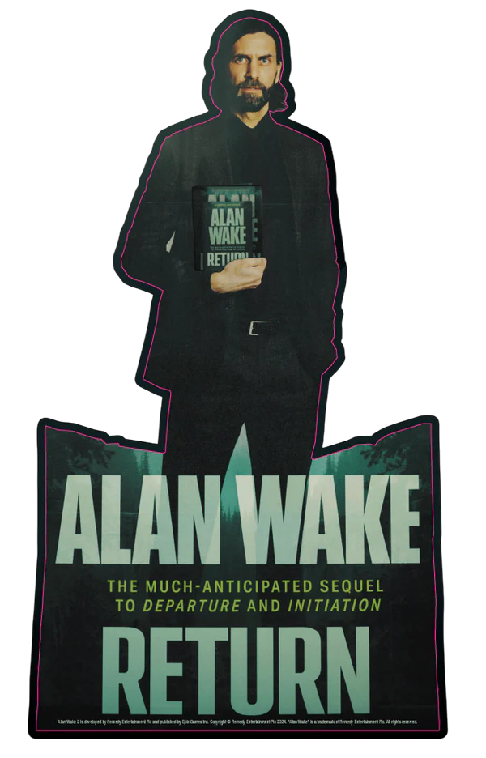

Sinopsis
Alan Wake 2 es un videojuego de terror psicológico y supervivencia (survival horror) centrado en una narrativa dual. Narra la historia de Saga Anderson, una agente del FBI que investiga asesinatos rituales en Bright Falls, y el escritor Alan Wake, quien intenta escapar del "Lugar Oscuro" reescribiendo la realidad. Ambos mundos están entrelazados, combinando elementos cinematográficos, investigación detectivesca y una atmósfera asfixiante.
